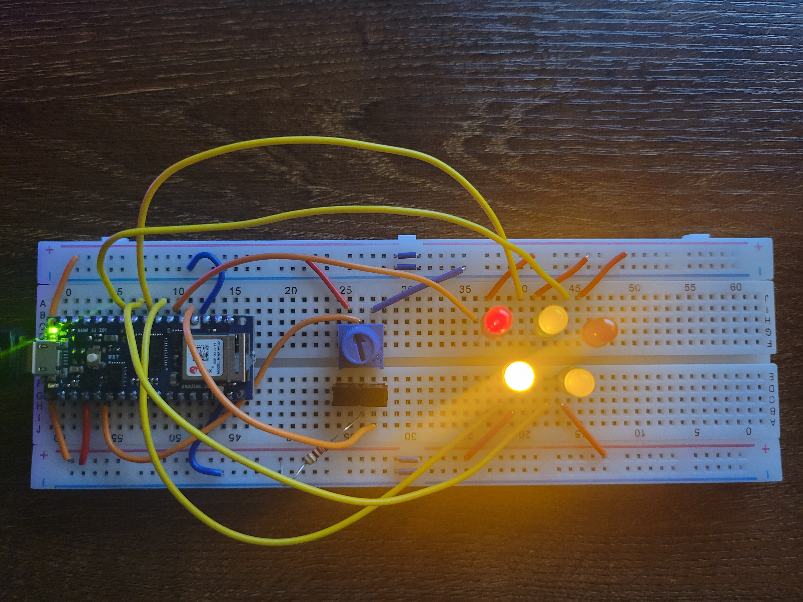
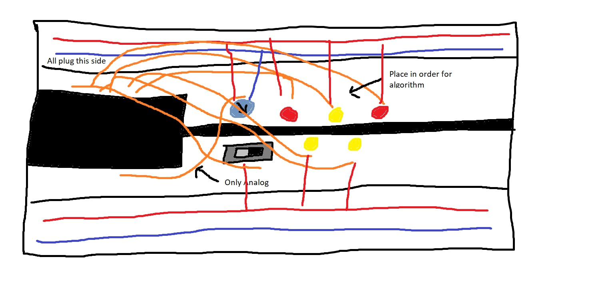

Alternating Light Controller
A project for controlling LEDs with unique inputs
For my first project in physical computing, I wanted to create a set of LED lights controlled by two different controls. I decided to create a device where an analog control adjusts the brightness of the LEDs. I also wanted to use a switch to passively control the display of the LEDs. To make this project, the documentation for my Arduino Nano 33 Iot was very useful in configuring my controls. I ran into a few difficulties when creating this project.

The board has two functions. The first function is controlled by the a dial on the board. This dial controls the brightness of the LED lights. Turning the dial clockwise will increase the brightness, while counterclockwise will do the opposite. Passively, the lights will turn on one after the other in an adjacent sequence. The second function is controlled by a switch which changes the direction that the LEDs turn on/off to be the direction the swtich is flipped to.

The first issue that I ran into when designing this project was determing where the LEDs would be placed. I needed to place them in close proximity to allow for the nice visuals. However, I also needed to place them in a way that would not cause the wires to touch one another as I learned in my first exercise. The biggest issue that I ran into was that my switch was returning fluctuating values when flipped in a specific direction. I was unable to find the cause of this, so I created a workaround in my code to ensure that this did not happen.
I am not happy with having to make a workaround in code for a physical issue, but it was all I was able to do to fix my issue. In the future, I hope to learn how to fix/avoid these types of issues. My code for the board can be downloaded here.